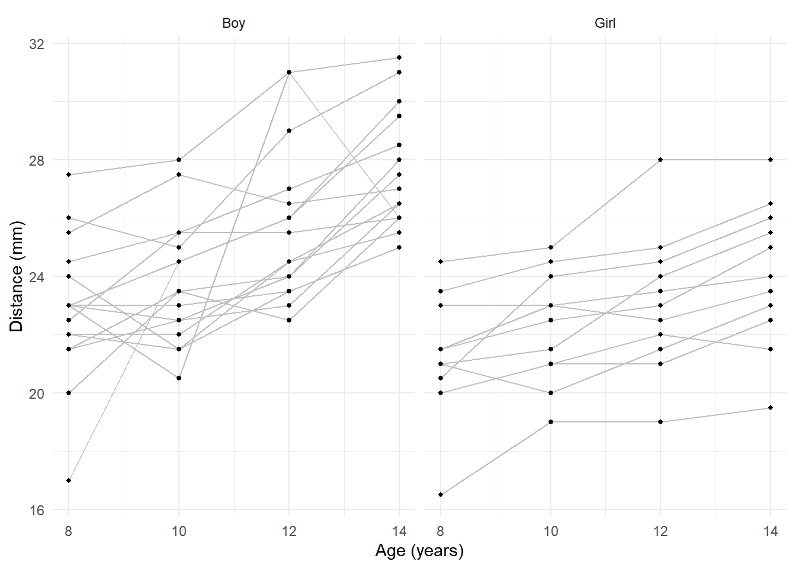
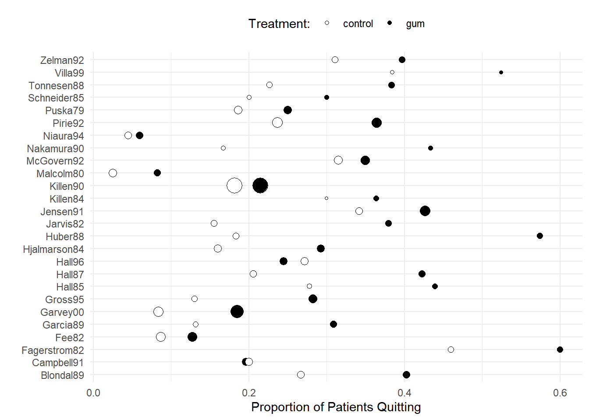
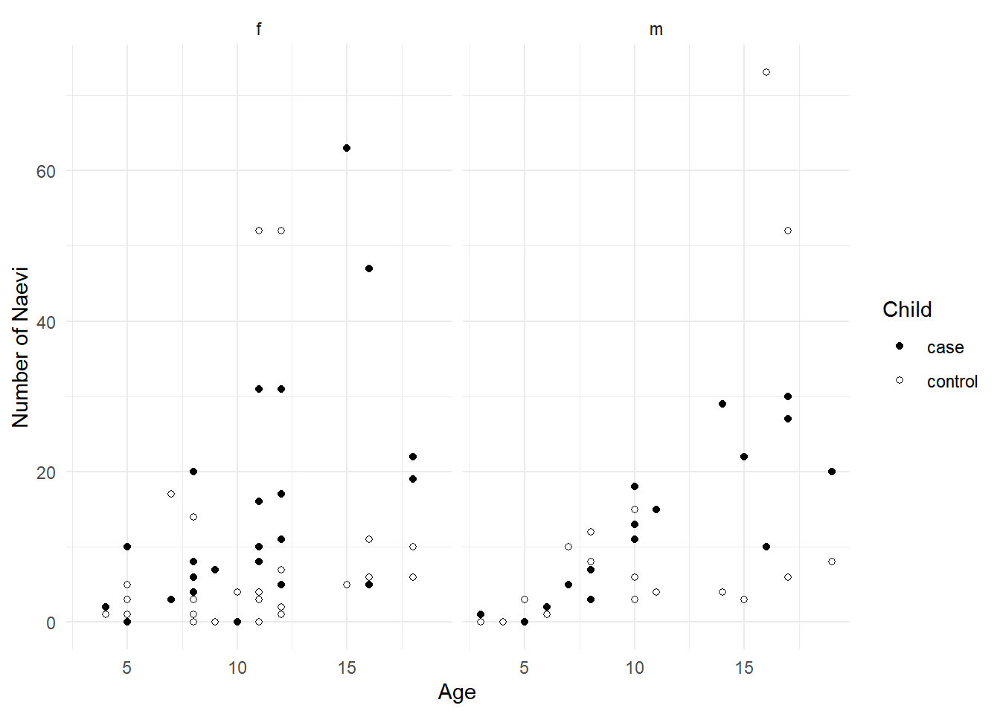
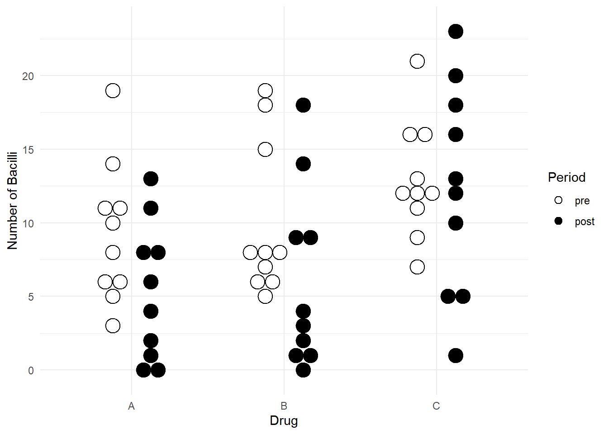

You can also download a PDF copy of this lecture.
The fixed effects approach is to specify the many-leveled factor as we might normally do with a factor with fewer levels. The term “fixed effects” is used to distinguish it from the “random effects” approach which we will discuss later. The question then is if and how having such a factor compromises inferences.
Example: Consider again the baserun
data.
library(dplyr)
library(tidyr)
baselong <- trtools::baserun |> mutate(player = factor(letters[1:n()])) |>
pivot_longer(cols = c(round, narrow, wide), names_to = "route", values_to = "time")
head(baselong)# A tibble: 6 × 3
player route time
<fct> <chr> <dbl>
1 a round 5.4
2 a narrow 5.5
3 a wide 5.55
4 b round 5.85
5 b narrow 5.7
6 b wide 5.75Consider a fixed effects model with an effect for player (but no interaction with route).
m.fix <- lm(time ~ route + player, data = baselong)
summary(m.fix)$coefficients Estimate Std. Error t value Pr(>|t|)
(Intercept) 5.51e+00 0.0521 1.06e+02 1.32e-52
routeround 9.09e-03 0.0260 3.49e-01 7.29e-01
routewide -7.50e-02 0.0260 -2.88e+00 6.21e-03
playerb 2.83e-01 0.0705 4.02e+00 2.37e-04
playerc -5.00e-02 0.0705 -7.09e-01 4.82e-01
playerd 1.18e-15 0.0705 1.67e-14 1.00e+00
playere 3.33e-01 0.0705 4.73e+00 2.55e-05
playerf 5.00e-02 0.0705 7.09e-01 4.82e-01
playerg -1.00e-01 0.0705 -1.42e+00 1.63e-01
playerh -5.00e-02 0.0705 -7.09e-01 4.82e-01
playeri -3.50e-01 0.0705 -4.97e+00 1.19e-05
playerj 3.00e-01 0.0705 4.26e+00 1.14e-04
playerk -3.00e-01 0.0705 -4.26e+00 1.14e-04
playerl 6.67e-02 0.0705 9.46e-01 3.50e-01
playerm -1.67e-02 0.0705 -2.36e-01 8.14e-01
playern -4.83e-01 0.0705 -6.86e+00 2.32e-08
playero -1.67e-02 0.0705 -2.36e-01 8.14e-01
playerp 1.67e-02 0.0705 2.36e-01 8.14e-01
playerq 8.79e-16 0.0705 1.25e-14 1.00e+00
playerr 1.67e-02 0.0705 2.36e-01 8.14e-01
players -8.33e-02 0.0705 -1.18e+00 2.44e-01
playert 6.67e-02 0.0705 9.46e-01 3.50e-01
playeru 1.50e-01 0.0705 2.13e+00 3.92e-02
playerv 8.00e-01 0.0705 1.14e+01 2.24e-14For comparison, we will also consider the marginal model using GEE, which should produce fairly accurate inferences.
library(geepack)
m.gee <- geeglm(time ~ route, data = baselong,
id = player, corstr = "exchangeable")
trtools::lincon(m.gee) # easy way to get something like summary(m.gee)$coefficients estimate se lower upper tvalue df pvalue
(Intercept) 5.53409 0.0541 5.4260 5.6422 102.281 63 9.59e-72
routeround 0.00909 0.0256 -0.0421 0.0603 0.355 63 7.24e-01
routewide -0.07500 0.0184 -0.1118 -0.0382 -4.077 63 1.30e-04Here are the inferences for the expected time for each route, and the differences in the expected time between routes.
library(emmeans)
pairs(emmeans(m.fix, ~route), infer = TRUE, adjust = "none") contrast estimate SE df lower.CL upper.CL t.ratio p.value
narrow - round -0.0091 0.026 42 -0.0616 0.0434 -0.350 0.7290
narrow - wide 0.0750 0.026 42 0.0225 0.1275 2.880 0.0060
round - wide 0.0841 0.026 42 0.0316 0.1366 3.230 0.0020
Results are averaged over the levels of: player
Confidence level used: 0.95 pairs(emmeans(m.gee, ~route), infer = TRUE, adjust = "none") contrast estimate SE df lower.CL upper.CL t.ratio p.value
narrow - round -0.0091 0.0256 63 -0.0603 0.0421 -0.350 0.7240
narrow - wide 0.0750 0.0184 63 0.0382 0.1118 4.080 <.0001
round - wide 0.0841 0.0307 63 0.0227 0.1455 2.740 0.0080
Confidence level used: 0.95 In linear models a fixed effects approach where the factor does not interact with other explanatory variables can produce valid inferences. But some inferences for explanatory variables that are confounded with the factor are not possible.
Example: Consider the following data on orthodontic measurements on children over time.
library(bayeslongitudinal)
head(Dental) gender id gencode distance age
1 Girl 1 1 21.0 8
2 Girl 1 1 20.0 10
3 Girl 1 1 21.5 12
4 Girl 1 1 23.0 14
5 Girl 2 1 21.0 8
6 Girl 2 1 21.5 10p <- ggplot(Dental, aes(x = age, y = distance)) +
geom_line(aes(group = id), color = grey(0.75)) +
geom_point(size = 1) + facet_wrap(~ gender) +
labs(x = "Age (years)", y = "Distance (mm)") + theme_minimal()
plot(p)
Age could be treated as a quantitative or categorical variable here. But the problem with the fixed effects approach is inferences for differences in expected distance between male and female children.m.fix <- lm(distance ~ factor(id) + age + gender, data = Dental)
summary(m.fix)$coefficients Estimate Std. Error t value Pr(>|t|)
(Intercept) 14.11 0.9857 14.318 8.88e-24
factor(id)2 1.62 1.0123 1.605 1.12e-01
factor(id)3 2.37 1.0123 2.346 2.14e-02
factor(id)4 3.50 1.0123 3.458 8.76e-04
factor(id)5 1.25 1.0123 1.235 2.21e-01
factor(id)6 -0.25 1.0123 -0.247 8.06e-01
factor(id)7 1.62 1.0123 1.605 1.12e-01
factor(id)8 2.00 1.0123 1.976 5.16e-02
factor(id)9 -0.25 1.0123 -0.247 8.06e-01
factor(id)10 -2.88 1.0123 -2.840 5.72e-03
factor(id)11 5.00 1.0123 4.939 4.22e-06
factor(id)12 6.38 1.0123 6.298 1.53e-08
factor(id)13 2.00 1.0123 1.976 5.16e-02
factor(id)14 2.88 1.0123 2.840 5.72e-03
factor(id)15 5.25 1.0123 5.186 1.58e-06
factor(id)16 1.62 1.0123 1.605 1.12e-01
factor(id)17 5.00 1.0123 4.939 4.22e-06
factor(id)18 2.37 1.0123 2.346 2.14e-02
factor(id)19 2.50 1.0123 2.470 1.57e-02
factor(id)20 3.75 1.0123 3.704 3.88e-04
factor(id)21 8.12 1.0123 8.026 7.18e-12
factor(id)22 2.25 1.0123 2.223 2.91e-02
factor(id)23 2.87 1.0123 2.840 5.72e-03
factor(id)24 2.87 1.0123 2.840 5.72e-03
factor(id)25 3.50 1.0123 3.458 8.76e-04
factor(id)26 4.50 1.0123 4.445 2.80e-05
factor(id)27 1.62 1.0123 1.605 1.12e-01
age 0.66 0.0616 10.716 3.95e-17Notice that there is no indicator variable of gender! The
lm function recognized that it is confounded with subject
and removed it. We can see this if we construct a table of the number of
observations by subject and sex.
with(Dental, table(id, gender)) gender
id Boy Girl
1 0 4
2 0 4
3 0 4
4 0 4
5 0 4
6 0 4
7 0 4
8 0 4
9 0 4
10 0 4
11 0 4
12 4 0
13 4 0
14 4 0
15 4 0
16 4 0
17 4 0
18 4 0
19 4 0
20 4 0
21 4 0
22 4 0
23 4 0
24 4 0
25 4 0
26 4 0
27 4 0These factors are nested (i.e., the variable id
is nested in the variable gender).
By changing the order of the explanatory variables we can get sex in the model but then we lose a subject indicator variable.
m.fix <- lm(distance ~ age + gender + factor(id), data = Dental)
summary(m.fix)$coefficients Estimate Std. Error t value Pr(>|t|)
(Intercept) 1.57e+01 0.9857 1.60e+01 1.36e-26
age 6.60e-01 0.0616 1.07e+01 3.95e-17
genderGirl -1.62e+00 1.0123 -1.61e+00 1.12e-01
factor(id)2 1.62e+00 1.0123 1.61e+00 1.12e-01
factor(id)3 2.37e+00 1.0123 2.35e+00 2.14e-02
factor(id)4 3.50e+00 1.0123 3.46e+00 8.76e-04
factor(id)5 1.25e+00 1.0123 1.23e+00 2.21e-01
factor(id)6 -2.50e-01 1.0123 -2.47e-01 8.06e-01
factor(id)7 1.62e+00 1.0123 1.61e+00 1.12e-01
factor(id)8 2.00e+00 1.0123 1.98e+00 5.16e-02
factor(id)9 -2.50e-01 1.0123 -2.47e-01 8.06e-01
factor(id)10 -2.88e+00 1.0123 -2.84e+00 5.72e-03
factor(id)11 5.00e+00 1.0123 4.94e+00 4.22e-06
factor(id)12 4.75e+00 1.0123 4.69e+00 1.10e-05
factor(id)13 3.75e-01 1.0123 3.70e-01 7.12e-01
factor(id)14 1.25e+00 1.0123 1.23e+00 2.21e-01
factor(id)15 3.63e+00 1.0123 3.58e+00 5.86e-04
factor(id)16 6.96e-16 1.0123 6.87e-16 1.00e+00
factor(id)17 3.37e+00 1.0123 3.33e+00 1.30e-03
factor(id)18 7.50e-01 1.0123 7.41e-01 4.61e-01
factor(id)19 8.75e-01 1.0123 8.64e-01 3.90e-01
factor(id)20 2.12e+00 1.0123 2.10e+00 3.90e-02
factor(id)21 6.50e+00 1.0123 6.42e+00 8.97e-09
factor(id)22 6.25e-01 1.0123 6.17e-01 5.39e-01
factor(id)23 1.25e+00 1.0123 1.23e+00 2.21e-01
factor(id)24 1.25e+00 1.0123 1.23e+00 2.21e-01
factor(id)25 1.87e+00 1.0123 1.85e+00 6.77e-02
factor(id)26 2.87e+00 1.0123 2.84e+00 5.72e-03If we wanted to compare the boys and girls, we could in principle estimate the average expected response for each sex, and the difference in these average expected responses (at a given age).
emmeans(m.fix, ~gender, at = list(age = 14)) gender emmean SE df lower.CL upper.CL
Boy 26.9 0.257 80 26.4 27.5
Girl 24.6 0.284 80 24.1 25.2
Results are averaged over the levels of: id
Confidence level used: 0.95 pairs(emmeans(m.fix, ~gender, at = list(age = 14))) contrast estimate SE df t.ratio p.value
Boy - Girl 2.32 0.28 80 8.280 <.0001
Results are averaged over the levels of: id But there is maybe a limitation of such inferences — they are for these particular children (i.e., these 16 boys and 11 girls). We are literally basing inferences on the average response across the children in this study.
rbind(emmeans(m.fix, ~gender|id, at = list(age = 14)), adjust = "none") gender id emmean SE df lower.CL upper.CL
Boy 12 29.7 0.739 80 28.3 31.2
Boy 13 25.4 0.739 80 23.9 26.8
Boy 14 26.2 0.739 80 24.8 27.7
Boy 15 28.6 0.739 80 27.1 30.1
Boy 16 25.0 0.739 80 23.5 26.5
Boy 17 28.4 0.739 80 26.9 29.8
Boy 18 25.7 0.739 80 24.3 27.2
Boy 19 25.9 0.739 80 24.4 27.3
Boy 20 27.1 0.739 80 25.6 28.6
Boy 21 31.5 0.739 80 30.0 33.0
Boy 22 25.6 0.739 80 24.1 27.1
Boy 23 26.2 0.739 80 24.8 27.7
Boy 24 26.2 0.739 80 24.8 27.7
Boy 25 26.9 0.739 80 25.4 28.3
Boy 26 27.9 0.739 80 26.4 29.3
Boy 27 25.0 0.739 80 23.5 26.5
Girl 1 23.4 0.739 80 21.9 24.8
Girl 2 25.0 0.739 80 23.5 26.5
Girl 3 25.7 0.739 80 24.3 27.2
Girl 4 26.9 0.739 80 25.4 28.3
Girl 5 24.6 0.739 80 23.1 26.1
Girl 6 23.1 0.739 80 21.6 24.6
Girl 7 25.0 0.739 80 23.5 26.5
Girl 8 25.4 0.739 80 23.9 26.8
Girl 9 23.1 0.739 80 21.6 24.6
Girl 10 20.5 0.739 80 19.0 22.0
Girl 11 28.4 0.739 80 26.9 29.8
Confidence level used: 0.95 Now suppose we specify an interaction between age and gender, so that the growth rate is different for boys and girls.
m.fix <- lm(distance ~ factor(id) + age * gender, data = Dental)
summary(m.fix)$coefficients Estimate Std. Error t value Pr(>|t|)
(Intercept) 16.100 1.2400 12.9837 2.74e-21
factor(id)2 1.625 0.9803 1.6576 1.01e-01
factor(id)3 2.375 0.9803 2.4227 1.77e-02
factor(id)4 3.500 0.9803 3.5703 6.11e-04
factor(id)5 1.250 0.9803 1.2751 2.06e-01
factor(id)6 -0.250 0.9803 -0.2550 7.99e-01
factor(id)7 1.625 0.9803 1.6576 1.01e-01
factor(id)8 2.000 0.9803 2.0402 4.47e-02
factor(id)9 -0.250 0.9803 -0.2550 7.99e-01
factor(id)10 -2.875 0.9803 -2.9327 4.39e-03
factor(id)11 5.000 0.9803 5.1004 2.27e-06
factor(id)12 3.022 1.6568 1.8239 7.19e-02
factor(id)13 -1.353 1.6568 -0.8167 4.17e-01
factor(id)14 -0.478 1.6568 -0.2886 7.74e-01
factor(id)15 1.897 1.6568 1.1449 2.56e-01
factor(id)16 -1.728 1.6568 -1.0431 3.00e-01
factor(id)17 1.647 1.6568 0.9940 3.23e-01
factor(id)18 -0.978 1.6568 -0.5904 5.57e-01
factor(id)19 -0.853 1.6568 -0.5149 6.08e-01
factor(id)20 0.397 1.6568 0.2395 8.11e-01
factor(id)21 4.772 1.6568 2.8802 5.11e-03
factor(id)22 -1.103 1.6568 -0.6658 5.07e-01
factor(id)23 -0.478 1.6568 -0.2886 7.74e-01
factor(id)24 -0.478 1.6568 -0.2886 7.74e-01
factor(id)25 0.147 1.6568 0.0887 9.30e-01
factor(id)26 1.147 1.6568 0.6922 4.91e-01
factor(id)27 -1.728 1.6568 -1.0431 3.00e-01
age 0.784 0.0775 10.1208 6.44e-16
age:genderGirl -0.305 0.1214 -2.5105 1.41e-02We can estimate the growth rates and compare them.
pairs(emmeans(m.fix, ~age|gender, at = list(age = c(10,9))))gender = Boy:
contrast estimate SE df t.ratio p.value
age10 - age9 0.784 0.0775 79 10.120 <.0001
gender = Girl:
contrast estimate SE df t.ratio p.value
age10 - age9 0.480 0.0935 79 5.130 <.0001
Results are averaged over the levels of: id pairs(pairs(emmeans(m.fix, ~age|gender, at = list(age = c(10,9)))), by = NULL) contrast estimate SE df t.ratio p.value
(age10 - age9 Boy) - (age10 - age9 Girl) 0.305 0.121 79 2.511 0.0141
Results are averaged over the levels of: id But now suppose we want to have a different growth rate for each child.
m.fix <- lm(distance ~ factor(id)*age + gender*age, data = Dental)
summary(m.fix)$coefficients Estimate Std. Error t value Pr(>|t|)
(Intercept) 1.72e+01 3.288 5.25e+00 2.67e-06
factor(id)2 -3.05e+00 4.650 -6.56e-01 5.15e-01
factor(id)3 -2.85e+00 4.650 -6.13e-01 5.43e-01
factor(id)4 2.40e+00 4.650 5.16e-01 6.08e-01
factor(id)5 2.35e+00 4.650 5.05e-01 6.15e-01
factor(id)6 -2.50e-01 4.650 -5.38e-02 9.57e-01
factor(id)7 -3.00e-01 4.650 -6.45e-02 9.49e-01
factor(id)8 4.20e+00 4.650 9.03e-01 3.70e-01
factor(id)9 8.50e-01 4.650 1.83e-01 8.56e-01
factor(id)10 -3.70e+00 4.650 -7.96e-01 4.30e-01
factor(id)11 1.70e+00 4.650 3.66e-01 7.16e-01
factor(id)12 5.00e-02 4.650 1.08e-02 9.91e-01
factor(id)13 -2.40e+00 4.650 -5.16e-01 6.08e-01
factor(id)14 -1.25e+00 4.650 -2.69e-01 7.89e-01
factor(id)15 7.45e+00 4.650 1.60e+00 1.15e-01
factor(id)16 -3.60e+00 4.650 -7.74e-01 4.42e-01
factor(id)17 1.70e+00 4.650 3.66e-01 7.16e-01
factor(id)18 -2.30e+00 4.650 -4.95e-01 6.23e-01
factor(id)19 2.50e+00 4.650 5.38e-01 5.93e-01
factor(id)20 -2.85e+00 4.650 -6.13e-01 5.43e-01
factor(id)21 4.00e+00 4.650 8.60e-01 3.93e-01
factor(id)22 2.80e+00 4.650 6.02e-01 5.50e-01
factor(id)23 -4.00e+00 4.650 -8.60e-01 3.93e-01
factor(id)24 -1.44e+01 4.650 -3.11e+00 3.01e-03
factor(id)25 1.85e+00 4.650 3.98e-01 6.92e-01
factor(id)26 -3.75e+00 4.650 -8.06e-01 4.24e-01
factor(id)27 -3.00e-01 4.650 -6.45e-02 9.49e-01
age 3.75e-01 0.293 1.28e+00 2.06e-01
factor(id)2:age 4.25e-01 0.414 1.03e+00 3.10e-01
factor(id)3:age 4.75e-01 0.414 1.15e+00 2.57e-01
factor(id)4:age 1.00e-01 0.414 2.41e-01 8.10e-01
factor(id)5:age -1.00e-01 0.414 -2.41e-01 8.10e-01
factor(id)6:age -1.64e-14 0.414 -3.97e-14 1.00e+00
factor(id)7:age 1.75e-01 0.414 4.22e-01 6.74e-01
factor(id)8:age -2.00e-01 0.414 -4.83e-01 6.31e-01
factor(id)9:age -1.00e-01 0.414 -2.41e-01 8.10e-01
factor(id)10:age 7.50e-02 0.414 1.81e-01 8.57e-01
factor(id)11:age 3.00e-01 0.414 7.24e-01 4.72e-01
factor(id)12:age 5.75e-01 0.414 1.39e+00 1.71e-01
factor(id)13:age 4.00e-01 0.414 9.66e-01 3.39e-01
factor(id)14:age 3.75e-01 0.414 9.05e-01 3.69e-01
factor(id)15:age -2.00e-01 0.414 -4.83e-01 6.31e-01
factor(id)16:age 4.75e-01 0.414 1.15e+00 2.57e-01
factor(id)17:age 3.00e-01 0.414 7.24e-01 4.72e-01
factor(id)18:age 4.25e-01 0.414 1.03e+00 3.10e-01
factor(id)19:age -5.60e-15 0.414 -1.35e-14 1.00e+00
factor(id)20:age 6.00e-01 0.414 1.45e+00 1.53e-01
factor(id)21:age 3.75e-01 0.414 9.05e-01 3.69e-01
factor(id)22:age -5.00e-02 0.414 -1.21e-01 9.04e-01
factor(id)23:age 6.25e-01 0.414 1.51e+00 1.37e-01
factor(id)24:age 1.57e+00 0.414 3.80e+00 3.67e-04
factor(id)25:age 1.50e-01 0.414 3.62e-01 7.19e-01
factor(id)26:age 7.50e-01 0.414 1.81e+00 7.58e-02
factor(id)27:age 1.75e-01 0.414 4.22e-01 6.74e-01Note that there are no terms for gender.
pairs(emmeans(m.fix, ~age|gender, at = list(age = c(10,9))))gender = Boy:
contrast estimate SE df t.ratio p.value
age10 - age9 0.784 0.0732 54 10.710 <.0001
gender = Girl:
contrast estimate SE df t.ratio p.value
age10 - age9 0.480 0.0883 54 5.430 <.0001
Results are averaged over the levels of: id pairs(pairs(emmeans(m.fix, ~age|gender, at = list(age = c(10,9)))), by = NULL) contrast estimate SE df t.ratio p.value
(age10 - age9 Boy) - (age10 - age9 Girl) 0.305 0.115 54 2.657 0.0104
Results are averaged over the levels of: id These are are based on averaging the estimated rates of change across the subjects in this study.
In general, the fixed effects approach does not permit proper inferences for explanatory variables that have a fixed effects variable nested within them. We are limited to inferences that are crossed with the fixed effect. Also, we are not able to properly model interactions involving the fixed effects.
Fixed effects can produce valid inferences for nonlinear models (including generalized linear models), but not necessarily. It depends, in part, on the number of parameters relative to the number of observations.
Example: Recall the meta-analysis of 26 studies of the effect of nicotine gum on smoking cessation.
library(dplyr)
library(tidyr)
quitsmoke <- HSAUR3::smoking
quitsmoke$study <- rownames(quitsmoke)
quitsmoke.quits <- quitsmoke |> dplyr::select(study, qt, qc) |>
rename(gum = qt, control = qc) |>
pivot_longer(cols = c(gum,control), names_to = "treatment", values_to = "quit")
quitsmoke.total <- quitsmoke |> dplyr::select(study, tt, tc) |>
rename(gum = tt, control = tc) |>
pivot_longer(cols = c(gum,control), names_to = "treatment", values_to = "total")
quitsmoke <- full_join(quitsmoke.quits, quitsmoke.total) |> mutate(study = factor(study)) |> arrange(study)
head(quitsmoke)# A tibble: 6 × 4
study treatment quit total
<fct> <chr> <int> <int>
1 Blondal89 gum 37 92
2 Blondal89 control 24 90
3 Campbell91 gum 21 107
4 Campbell91 control 21 105
5 Fagerstrom82 gum 30 50
6 Fagerstrom82 control 23 50p <- ggplot(quitsmoke, aes(x = study, y = quit/total,
size = total, fill = treatment)) +
geom_point(pch = 21) + coord_flip() + guides(size = "none") +
scale_fill_manual(values = c("White","Black")) + theme_minimal() +
labs(x = "", y = "Proportion of Patients Quitting", fill = "Treatment:") +
theme(legend.position = "top")
plot(p)
Here is a fixed-effects logistic regression model.m <- glm(cbind(quit, total-quit) ~ treatment + study,
family = binomial, data = quitsmoke)
summary(m)$coefficients Estimate Std. Error z value Pr(>|z|)
(Intercept) -0.9561 0.1622 -5.893 3.78e-09
treatmentgum 0.5148 0.0657 7.834 4.74e-15
studyCampbell91 -0.7218 0.2346 -3.077 2.09e-03
studyFagerstrom82 0.8209 0.2566 3.199 1.38e-03
studyFee82 -1.4447 0.2339 -6.176 6.57e-10
studyGarcia89 -0.5137 0.2768 -1.856 6.35e-02
studyGarvey00 -1.1312 0.1951 -5.797 6.75e-09
studyGross95 -0.5748 0.2372 -2.424 1.54e-02
studyHall85 0.1132 0.2863 0.395 6.93e-01
studyHall87 -0.0887 0.2424 -0.366 7.14e-01
studyHall96 -0.3636 0.2265 -1.605 1.08e-01
studyHjalmarson84 -0.5455 0.2300 -2.372 1.77e-02
studyHuber88 0.1647 0.2516 0.654 5.13e-01
studyJarvis82 -0.3254 0.2638 -1.233 2.17e-01
studyJensen91 0.1852 0.1989 0.931 3.52e-01
studyKillen84 -0.0539 0.3086 -0.175 8.61e-01
studyKillen90 -0.7163 0.1739 -4.119 3.81e-05
studyMalcolm80 -2.2897 0.3767 -6.078 1.21e-09
studyMcGovern92 -0.0235 0.2043 -0.115 9.08e-01
studyNakamura90 -0.1619 0.3248 -0.498 6.18e-01
studyNiaura94 -2.2260 0.3776 -5.894 3.76e-09
studyPirie92 -0.1599 0.1913 -0.836 4.03e-01
studyPuska79 -0.5987 0.2256 -2.654 7.96e-03
studySchneider85 -0.4165 0.3391 -1.228 2.19e-01
studyTonnesen88 -0.1313 0.2588 -0.507 6.12e-01
studyVilla99 0.5093 0.3355 1.518 1.29e-01
studyZelman92 0.0851 0.2516 0.338 7.35e-01We can estimate the odds ratio for the effect of treatment as follows.
rbind(pairs(emmeans(m, ~ treatment | study, type = "response"),
reverse = TRUE), adjust = "none") study contrast odds.ratio SE df null z.ratio p.value
Blondal89 gum / control 1.67 0.11 Inf 1 7.830 <.0001
Campbell91 gum / control 1.67 0.11 Inf 1 7.830 <.0001
Fagerstrom82 gum / control 1.67 0.11 Inf 1 7.830 <.0001
Fee82 gum / control 1.67 0.11 Inf 1 7.830 <.0001
Garcia89 gum / control 1.67 0.11 Inf 1 7.830 <.0001
Garvey00 gum / control 1.67 0.11 Inf 1 7.830 <.0001
Gross95 gum / control 1.67 0.11 Inf 1 7.830 <.0001
Hall85 gum / control 1.67 0.11 Inf 1 7.830 <.0001
Hall87 gum / control 1.67 0.11 Inf 1 7.830 <.0001
Hall96 gum / control 1.67 0.11 Inf 1 7.830 <.0001
Hjalmarson84 gum / control 1.67 0.11 Inf 1 7.830 <.0001
Huber88 gum / control 1.67 0.11 Inf 1 7.830 <.0001
Jarvis82 gum / control 1.67 0.11 Inf 1 7.830 <.0001
Jensen91 gum / control 1.67 0.11 Inf 1 7.830 <.0001
Killen84 gum / control 1.67 0.11 Inf 1 7.830 <.0001
Killen90 gum / control 1.67 0.11 Inf 1 7.830 <.0001
Malcolm80 gum / control 1.67 0.11 Inf 1 7.830 <.0001
McGovern92 gum / control 1.67 0.11 Inf 1 7.830 <.0001
Nakamura90 gum / control 1.67 0.11 Inf 1 7.830 <.0001
Niaura94 gum / control 1.67 0.11 Inf 1 7.830 <.0001
Pirie92 gum / control 1.67 0.11 Inf 1 7.830 <.0001
Puska79 gum / control 1.67 0.11 Inf 1 7.830 <.0001
Schneider85 gum / control 1.67 0.11 Inf 1 7.830 <.0001
Tonnesen88 gum / control 1.67 0.11 Inf 1 7.830 <.0001
Villa99 gum / control 1.67 0.11 Inf 1 7.830 <.0001
Zelman92 gum / control 1.67 0.11 Inf 1 7.830 <.0001
Tests are performed on the log odds ratio scale Note that using rbind makes the output a bit more
compact. Here is how we can do that using contrast from
trtools.
trtools::contrast(m,
a = list(treatment = "gum", study = unique(quitsmoke$study)),
b = list(treatment = "control", study = unique(quitsmoke$study)),
tf = exp, cnames = unique(quitsmoke$study)) estimate lower upper
Blondal89 1.67 1.47 1.9
Campbell91 1.67 1.47 1.9
Fagerstrom82 1.67 1.47 1.9
Fee82 1.67 1.47 1.9
Garcia89 1.67 1.47 1.9
Garvey00 1.67 1.47 1.9
Gross95 1.67 1.47 1.9
Hall85 1.67 1.47 1.9
Hall87 1.67 1.47 1.9
Hall96 1.67 1.47 1.9
Hjalmarson84 1.67 1.47 1.9
Huber88 1.67 1.47 1.9
Jarvis82 1.67 1.47 1.9
Jensen91 1.67 1.47 1.9
Killen84 1.67 1.47 1.9
Killen90 1.67 1.47 1.9
Malcolm80 1.67 1.47 1.9
McGovern92 1.67 1.47 1.9
Nakamura90 1.67 1.47 1.9
Niaura94 1.67 1.47 1.9
Pirie92 1.67 1.47 1.9
Puska79 1.67 1.47 1.9
Schneider85 1.67 1.47 1.9
Tonnesen88 1.67 1.47 1.9
Villa99 1.67 1.47 1.9
Zelman92 1.67 1.47 1.9Since the odds ratio is assumed to be the same for each study, we can just pick an arbitrary study.
pairs(emmeans(m, ~ treatment | study, type = "response",
at = list(study = "Blondal89")), adjust = "none", reverse = TRUE)study = Blondal89:
contrast odds.ratio SE df null z.ratio p.value
gum / control 1.67 0.11 Inf 1 7.830 <.0001
Tests are performed on the log odds ratio scale trtools::contrast(m,
a = list(treatment = "gum", study = "Blondal89"),
b = list(treatment = "control", study = "Blondal89"),
tf = exp) estimate lower upper
1.67 1.47 1.9Or we can omit study when using the
emmeans package, causing it to average over study.
pairs(emmeans(m, ~ treatment, type = "response"), infer = TRUE, reverse = TRUE) contrast odds.ratio SE df asymp.LCL asymp.UCL null z.ratio p.value
gum / control 1.67 0.11 Inf 1.47 1.9 1 7.830 <.0001
Results are averaged over the levels of: study
Confidence level used: 0.95
Intervals are back-transformed from the log odds ratio scale
Tests are performed on the log odds ratio scale Here is a model where the effect of nicotine gum varies over study.
m <- glm(cbind(quit, total-quit) ~ treatment * study,
family = binomial, data = quitsmoke)
summary(m)$coefficients Estimate Std. Error z value Pr(>|z|)
(Intercept) -1.01160 0.238 -4.2439 2.20e-05
treatmentgum 0.61519 0.319 1.9260 5.41e-02
studyCampbell91 -0.37469 0.341 -1.0985 2.72e-01
studyFagerstrom82 0.85126 0.371 2.2971 2.16e-02
studyFee82 -1.33659 0.360 -3.7091 2.08e-04
studyGarcia89 -0.87547 0.536 -1.6338 1.02e-01
studyGarvey00 -1.38093 0.348 -3.9696 7.20e-05
studyGross95 -0.88552 0.498 -1.7764 7.57e-02
studyHall85 0.05609 0.442 0.1269 8.99e-01
studyHall87 -0.33833 0.383 -0.8831 3.77e-01
studyHall96 0.02632 0.325 0.0809 9.36e-01
studyHjalmarson84 -0.64663 0.362 -1.7850 7.43e-02
studyHuber88 -0.48232 0.410 -1.1763 2.39e-01
studyJarvis82 -0.68299 0.434 -1.5738 1.16e-01
studyJensen91 0.35482 0.333 1.0648 2.87e-01
studyKillen84 0.16430 0.543 0.3026 7.62e-01
studyKillen90 -0.49446 0.260 -1.9000 5.74e-02
studyMalcolm80 -2.66047 0.631 -4.2138 2.51e-05
studyMcGovern92 0.23457 0.305 0.7679 4.43e-01
studyNakamura90 -0.59784 0.545 -1.0973 2.72e-01
studyNiaura94 -2.04476 0.564 -3.6227 2.92e-04
studyPirie92 -0.15778 0.288 -0.5476 5.84e-01
studyPuska79 -0.46567 0.340 -1.3713 1.70e-01
studySchneider85 -0.37469 0.515 -0.7277 4.67e-01
studyTonnesen88 -0.21706 0.406 -0.5351 5.93e-01
studyVilla99 0.54160 0.468 1.1565 2.47e-01
studyZelman92 0.21309 0.371 0.5749 5.65e-01
treatmentgum:studyCampbell91 -0.63872 0.470 -1.3593 1.74e-01
treatmentgum:studyFagerstrom82 -0.04938 0.516 -0.0958 9.24e-01
treatmentgum:studyFee82 -0.18774 0.474 -0.3959 6.92e-01
treatmentgum:studyGarcia89 0.46626 0.633 0.7361 4.62e-01
treatmentgum:studyGarvey00 0.29574 0.427 0.6921 4.89e-01
treatmentgum:studyGross95 0.34956 0.576 0.6073 5.44e-01
treatmentgum:studyHall85 0.09520 0.583 0.1634 8.70e-01
treatmentgum:studyHall87 0.42237 0.500 0.8452 3.98e-01
treatmentgum:studyHall96 -0.75591 0.454 -1.6644 9.60e-02
treatmentgum:studyHjalmarson84 0.15954 0.471 0.3386 7.35e-01
treatmentgum:studyHuber88 1.17723 0.538 2.1895 2.86e-02
treatmentgum:studyJarvis82 0.58693 0.554 1.0597 2.89e-01
treatmentgum:studyJensen91 -0.25439 0.419 -0.6070 5.44e-01
treatmentgum:studyKillen84 -0.32750 0.662 -0.4947 6.21e-01
treatmentgum:studyKillen90 -0.40417 0.350 -1.1533 2.49e-01
treatmentgum:studyMalcolm80 0.64395 0.791 0.8143 4.15e-01
treatmentgum:studyMcGovern92 -0.46021 0.411 -1.1206 2.62e-01
treatmentgum:studyNakamura90 0.72599 0.691 1.0503 2.94e-01
treatmentgum:studyNiaura94 -0.31884 0.759 -0.4199 6.75e-01
treatmentgum:studyPirie92 -0.00351 0.386 -0.0091 9.93e-01
treatmentgum:studyPuska79 -0.23653 0.454 -0.5205 6.03e-01
treatmentgum:studySchneider85 -0.07619 0.685 -0.1112 9.11e-01
treatmentgum:studyTonnesen88 0.13806 0.529 0.2608 7.94e-01
treatmentgum:studyVilla99 -0.04987 0.675 -0.0739 9.41e-01
treatmentgum:studyZelman92 -0.23653 0.505 -0.4687 6.39e-01rbind(pairs(emmeans(m, ~ treatment | study, type = "response"),
reverse = TRUE), adjust = "none") study contrast odds.ratio SE df null z.ratio p.value
Blondal89 gum / control 1.85 0.591 Inf 1 1.930 0.0540
Campbell91 gum / control 0.98 0.337 Inf 1 -0.070 0.9460
Fagerstrom82 gum / control 1.76 0.713 Inf 1 1.400 0.1620
Fee82 gum / control 1.53 0.538 Inf 1 1.220 0.2230
Garcia89 gum / control 2.95 1.610 Inf 1 1.980 0.0480
Garvey00 gum / control 2.49 0.706 Inf 1 3.210 0.0010
Gross95 gum / control 2.62 1.260 Inf 1 2.010 0.0440
Hall85 gum / control 2.03 0.992 Inf 1 1.460 0.1450
Hall87 gum / control 2.82 1.080 Inf 1 2.700 0.0070
Hall96 gum / control 0.87 0.280 Inf 1 -0.440 0.6630
Hjalmarson84 gum / control 2.17 0.752 Inf 1 2.240 0.0250
Huber88 gum / control 6.00 2.600 Inf 1 4.140 <.0001
Jarvis82 gum / control 3.33 1.510 Inf 1 2.660 0.0080
Jensen91 gum / control 1.43 0.389 Inf 1 1.330 0.1840
Killen84 gum / control 1.33 0.773 Inf 1 0.500 0.6200
Killen90 gum / control 1.23 0.178 Inf 1 1.460 0.1430
Malcolm80 gum / control 3.52 2.550 Inf 1 1.740 0.0820
McGovern92 gum / control 1.17 0.301 Inf 1 0.600 0.5480
Nakamura90 gum / control 3.82 2.340 Inf 1 2.190 0.0290
Niaura94 gum / control 1.34 0.926 Inf 1 0.430 0.6670
Pirie92 gum / control 1.84 0.400 Inf 1 2.820 0.0050
Puska79 gum / control 1.46 0.472 Inf 1 1.170 0.2410
Schneider85 gum / control 1.71 1.040 Inf 1 0.890 0.3740
Tonnesen88 gum / control 2.12 0.897 Inf 1 1.780 0.0740
Villa99 gum / control 1.76 1.050 Inf 1 0.950 0.3420
Zelman92 gum / control 1.46 0.570 Inf 1 0.970 0.3320
Tests are performed on the log odds ratio scale We can estimate the average odds ratio across studies (using the delta method).
trtools::contrast(m,
a = list(treatment = "gum", study = unique(quitsmoke$study)),
b = list(treatment = "control", study = unique(quitsmoke$study)),
tf = function(x) mean(exp(x))) estimate se lower upper tvalue df pvalue
2.14 0.228 1.69 2.59 9.38 Inf 6.43e-21Note that the following will also “average” over study, but the averaging is done on the log odds scale, so the result is not actually the average odds ratio but instead the average logarithm of the odds ratio to which we have applied the exponential function, for which the interpretation is not clear.
pairs(emmeans(m, ~ treatment, type = "response"), infer = TRUE, reverse = TRUE) contrast odds.ratio SE df asymp.LCL asymp.UCL null z.ratio p.value
gum / control 1.93 0.169 Inf 1.62 2.29 1 7.490 <.0001
Results are averaged over the levels of: study
Confidence level used: 0.95
Intervals are back-transformed from the log odds ratio scale
Tests are performed on the log odds ratio scale To estimate the average odds ratio with the emmeans
package we need to usse regrid.
tmp <- pairs(emmeans(m, ~ treatment|study, type = "response"), reverse = TRUE)
emmeans(regrid(tmp), ~1) 1 odds.ratio SE df asymp.LCL asymp.UCL
overall 2.14 0.228 Inf 1.69 2.59
Results are averaged over the levels of: study
Confidence level used: 0.95 This does the same thing as using
tf = function(x) mean(exp(x)) with the
contrast function.
These inferences are probably fine because while there can be a relatively large number of parameters, there are many observations per study as well. The data are aggregated. But we should note that when including the interaction the average odds ratio is just for those studies.
Where we can get into trouble is when there are only a few observations per level of the many-leveled factor.
Example: Consider simulated data for a logistic regression model where we observe \(m\) observations of a binary response variable for each of \(n\) subjects. If we include a fixed effect for subject, the number of parameters is 1 + \(n\) and the number of binary observations is \(nm\) (\(m\) per subject). We will use a relatively large total sample size of \(nm\) = 1000, which should produce good estimates of the parameter for the effect of the explanatory variable, which has a value of \(\beta_1\) = 1.
Here we have \(n\) = 1000 subjects with \(m\) = 2 observations per subject (1001 parameters).
set.seed(101)
n <- 1000
m <- 2
d <- data.frame(x = runif(n*m, -3, 3), z = rep(rnorm(n), each = m))
d$y <- rbinom(n*m, 1, plogis(d$x + d$z))
d$subject <- rep(1:n, each = m)
m <- glm(y ~ x + factor(subject), family = binomial, data = d)Warning: glm.fit: fitted probabilities numerically 0 or 1 occurredhead(summary(m)$coefficients) Estimate Std. Error z value Pr(>|z|)
(Intercept) 3.55 2.19e+00 1.62079 1.05e-01
x 2.03 1.26e-01 16.03149 7.70e-58
factor(subject)2 -26.39 1.25e+04 -0.00212 9.98e-01
factor(subject)3 -21.41 1.25e+04 -0.00172 9.99e-01
factor(subject)4 -24.30 1.13e+04 -0.00214 9.98e-01
factor(subject)5 -4.57 2.63e+00 -1.73503 8.27e-02Here we have \(n\) = 100 subjects with \(m\) = 20 observations per subject (21 parameters).
set.seed(101)
n <- 100
m <- 20
d <- data.frame(x = runif(n*m, -3, 3), z = rep(rnorm(n), each = m))
d$y <- rbinom(n*m, 1, plogis(d$x + d$z))
d$subject <- rep(1:n, each = m)
m <- glm(y ~ x + factor(subject), family = binomial, data = d)
head(summary(m)$coefficients) Estimate Std. Error z value Pr(>|z|)
(Intercept) 0.506 0.5685 0.890 3.74e-01
x 1.071 0.0492 21.740 8.60e-105
factor(subject)2 -4.015 1.0005 -4.013 5.99e-05
factor(subject)3 -0.908 0.7898 -1.149 2.50e-01
factor(subject)4 0.569 0.9233 0.616 5.38e-01
factor(subject)5 -1.549 0.8675 -1.786 7.41e-02Having too many parameters relative to the number of observations causes problems.
In some models (namely logistic and Poisson regression), we can handle the incidental parameter problem if it only involves only a “main effect” by using what is called a conditional likelihood which in a sense removes the effect of the factor. Consider again our data with \(n\) = 1000 subjects and \(m\) = 2 binary observations per subject.
set.seed(101)
n <- 1000
m <- 2
d <- data.frame(x = runif(n*m, -3, 3), z = rep(rnorm(n), each = m))
d$y <- rbinom(n*m, 1, plogis(d$x + d$z))
d$subject <- rep(1:n, each = m)
library(survival) # for the clogit function
m <- clogit(y ~ x + strata(subject), data = d)
summary(m)Call:
coxph(formula = Surv(rep(1, 2000L), y) ~ x + strata(subject),
data = d, method = "exact")
n= 2000, number of events= 982
coef exp(coef) se(coef) z Pr(>|z|)
x 1.0132 2.7544 0.0894 11.3 <2e-16 ***
---
Signif. codes: 0 '***' 0.001 '**' 0.01 '*' 0.05 '.' 0.1 ' ' 1
exp(coef) exp(-coef) lower .95 upper .95
x 2.75 0.363 2.31 3.28
Concordance= 0.861 (se = 0.023 )
Likelihood ratio test= 335 on 1 df, p=<2e-16
Wald test = 128 on 1 df, p=<2e-16
Score (logrank) test = 255 on 1 df, p=<2e-16The clogit function requires that the response is
binary, so to apply it to the smoking cessation data we would
need to reformat the data.
quitsmoke <- quitsmoke |>
mutate(noquit = total - quit) |> dplyr::select(-total) |>
pivot_longer(cols = c(quit, noquit), names_to = "outcome", values_to = "count")
head(quitsmoke)# A tibble: 6 × 4
study treatment outcome count
<fct> <chr> <chr> <int>
1 Blondal89 gum quit 37
2 Blondal89 gum noquit 55
3 Blondal89 control quit 24
4 Blondal89 control noquit 66
5 Campbell91 gum quit 21
6 Campbell91 gum noquit 86quitsmoke <- quitsmoke |> uncount(count) |>
mutate(y = ifelse(outcome == "quit", 1, 0))
head(quitsmoke)# A tibble: 6 × 4
study treatment outcome y
<fct> <chr> <chr> <dbl>
1 Blondal89 gum quit 1
2 Blondal89 gum quit 1
3 Blondal89 gum quit 1
4 Blondal89 gum quit 1
5 Blondal89 gum quit 1
6 Blondal89 gum quit 1m <- clogit(y ~ treatment + strata(study), data = quitsmoke)
summary(m)Call:
coxph(formula = Surv(rep(1, 5846L), y) ~ treatment + strata(study),
data = quitsmoke, method = "exact")
n= 5846, number of events= 1394
coef exp(coef) se(coef) z Pr(>|z|)
treatmentgum 0.5123 1.6691 0.0656 7.81 5.5e-15 ***
---
Signif. codes: 0 '***' 0.001 '**' 0.01 '*' 0.05 '.' 0.1 ' ' 1
exp(coef) exp(-coef) lower .95 upper .95
treatmentgum 1.67 0.599 1.47 1.9
Concordance= 0.545 (se = 0.011 )
Likelihood ratio test= 62.3 on 1 df, p=3e-15
Wald test = 61.1 on 1 df, p=6e-15
Score (logrank) test = 61.7 on 1 df, p=4e-15Poisson regression is an interesting special case when using either a fixed effects approach or conditional maximum likelihood. Here the two approaches produce the same results.
Example: Consider the following data from a
case-control study that compared the number of naevi between
children with (case) and without (control)
spina bifida.
library(dplyr)
library(tidyr)
library(trtools) # for the naevi data
naevi$set <- factor(1:nrow(naevi)) # data frame naevi is from trtools package
head(naevi) sex age case control set
1 f 16 5 6 1
2 f 5 0 3 2
3 m 10 15 15 3
4 m 6 2 1 4
5 f 12 11 7 5
6 f 18 22 6 6naevilong <- naevi |> pivot_longer(cols = c(case, control),
names_to = "child", values_to = "count")
head(naevilong)# A tibble: 6 × 5
sex age set child count
<fct> <int> <fct> <chr> <int>
1 f 16 1 case 5
2 f 16 1 control 6
3 f 5 2 case 0
4 f 5 2 control 3
5 m 10 3 case 15
6 m 10 3 control 15p <- ggplot(naevilong, aes(x = age, y = count, fill = child)) +
facet_wrap(~ sex) + geom_point(shape = 21) +
scale_fill_manual(values = c("black","white")) +
labs(x = "Age", y = "Number of Naevi", fill = "Child") + theme_minimal()
plot(p)
The children have been matched by age and sex. But there may be other variables that are correlated with age and sex that are also related to the number of naevi, and these will potential cause a “set effect” on the counts. There are several ways we could handle this.m <- glm(count ~ child + set, family = poisson, data = naevilong)
head(summary(m)$coefficients) Estimate Std. Error z value Pr(>|z|)
(Intercept) 1.849 0.3027 6.11 1.01e-09
childcontrol -0.313 0.0643 -4.87 1.12e-06
set2 -1.299 0.6513 -1.99 4.61e-02
set3 1.003 0.3525 2.85 4.42e-03
set4 -1.299 0.6513 -1.99 4.61e-02
set5 0.492 0.3827 1.29 1.98e-01Note that we omit age and sex since those variables vary between but not within sets and are thus “redundant” with the effect of set (if you include them it will not change inferences concerning the effect of child). Let’s estimate the effect of being a case.
trtools::contrast(m, tf = exp,
a = list(child = "case", set = "1"),
b = list(child = "control", set = "1")) estimate lower upper
1.37 1.21 1.55Note that the set does not matter.
There is a trick to using conditional maximum likelihood here. It can be done by using logistic regression.
m <- glm(cbind(case, control) ~ 1, family = binomial, data = naevi)
summary(m)$coefficients Estimate Std. Error z value Pr(>|z|)
(Intercept) 0.313 0.0643 4.87 1.12e-06Strange model. But look at this.
trtools::lincon(m, tf = exp) estimate lower upper
(Intercept) 1.37 1.21 1.55There’s maybe no real advantage to using conditional maximum likelihood here via logistic regression except that in problems with many levels it is computationally faster.
Example: Consider data from a study of the effect of
three antibiotics on leprosy bacilli. Note that if you want to install
ALA you will need to use
install.packages("ALA", repos = "http://R-Forge.R-project.org")
because it is not kept on the default repository.
library(ALA)
head(leprosy) id drug period nBacilli
1 1 A pre 11
31 1 A post 6
2 2 B pre 6
32 2 B post 0
3 3 C pre 16
33 3 C post 13p <- ggplot(leprosy, aes(x = drug, y = nBacilli, fill = period)) +
geom_dotplot(binaxis = "y", method = "histodot",
stackdir = "center", binwidth = 1,
position = position_dodge(width = 0.5)) +
scale_fill_manual(values = c("white","black")) +
labs(x = "Drug", y = "Number of Bacilli", fill = "Period") +
theme_minimal()
plot(p)
First a fixed effects approach.m <- glm(nBacilli ~ factor(id) + drug*period, family = poisson, data = leprosy)
summary(m)$coefficients Estimate Std. Error z value Pr(>|z|)
(Intercept) 2.3822 0.250 9.5116 1.88e-21
factor(id)2 -1.0667 0.483 -2.2090 2.72e-02
factor(id)3 0.3155 0.318 0.9927 3.21e-01
factor(id)4 -0.7538 0.429 -1.7581 7.87e-02
factor(id)5 -0.7790 0.438 -1.7801 7.51e-02
factor(id)6 0.0837 0.332 0.2523 8.01e-01
factor(id)7 -0.8873 0.449 -1.9758 4.82e-02
factor(id)8 -0.5559 0.408 -1.3622 1.73e-01
factor(id)9 0.3155 0.318 0.9927 3.21e-01
factor(id)10 0.2578 0.323 0.7984 4.25e-01
factor(id)11 -0.6612 0.421 -1.5689 1.17e-01
factor(id)12 -0.4128 0.371 -1.1114 2.66e-01
factor(id)13 0.5680 0.304 1.8710 6.13e-02
factor(id)14 0.7251 0.307 2.3613 1.82e-02
factor(id)15 0.7324 0.299 2.4516 1.42e-02
factor(id)16 -0.5306 0.399 -1.3315 1.83e-01
factor(id)17 -0.3735 0.387 -0.9649 3.35e-01
factor(id)18 0.2804 0.320 0.8769 3.81e-01
factor(id)19 0.3023 0.320 0.9451 3.45e-01
factor(id)20 0.6381 0.311 2.0506 4.03e-02
factor(id)21 -0.2186 0.354 -0.6175 5.37e-01
factor(id)22 -0.8873 0.449 -1.9758 4.82e-02
factor(id)23 -0.0252 0.354 -0.0713 9.43e-01
factor(id)24 0.2804 0.320 0.8769 3.81e-01
factor(id)25 0.1112 0.334 0.3332 7.39e-01
factor(id)26 -1.0667 0.483 -2.2090 2.72e-02
factor(id)27 -0.9724 0.438 -2.2220 2.63e-02
factor(id)28 -1.7346 0.626 -2.7699 5.61e-03
factor(id)29 0.3196 0.329 0.9717 3.31e-01
factor(id)30 0.4139 0.313 1.3238 1.86e-01
periodpost -0.5623 0.172 -3.2672 1.09e-03
drugB:periodpost 0.0680 0.237 0.2874 7.74e-01
drugC:periodpost 0.5147 0.213 2.4128 1.58e-02Now we can estimate the rate ratio for the effect of period for each drug.
pairs(emmeans(m, ~ period | drug, type = "response"),
reverse = TRUE, infer = TRUE)drug = A:
contrast ratio SE df asymp.LCL asymp.UCL null z.ratio p.value
post / pre 0.570 0.0981 Inf 0.407 0.799 1 -3.270 0.0010
drug = B:
contrast ratio SE df asymp.LCL asymp.UCL null z.ratio p.value
post / pre 0.610 0.0991 Inf 0.444 0.839 1 -3.040 0.0020
drug = C:
contrast ratio SE df asymp.LCL asymp.UCL null z.ratio p.value
post / pre 0.953 0.1200 Inf 0.745 1.221 1 -0.380 0.7050
Results are averaged over the levels of: id
Confidence level used: 0.95
Intervals are back-transformed from the log scale
Tests are performed on the log scale Interestingly for this particular model we could actually drop
factor(id) from the model entirely as it is nested with
drug. We would obtain the same inferences! But do not assume that this
is the case in general.
Note how rbind makes the output a bit more compact. Nice
feature.
rbind(pairs(emmeans(m, ~ period | drug, type = "response"),
reverse = TRUE, infer = TRUE), adjust = "none") drug contrast ratio SE df asymp.LCL asymp.UCL null z.ratio p.value
A post / pre 0.570 0.0981 Inf 0.407 0.799 1 -3.270 0.0010
B post / pre 0.610 0.0991 Inf 0.444 0.839 1 -3.040 0.0020
C post / pre 0.953 0.1200 Inf 0.745 1.221 1 -0.380 0.7050
Results are averaged over some or all of the levels of: id
Confidence level used: 0.95
Intervals are back-transformed from the log scale
Tests are performed on the log scale How do we compare the rate ratios between drugs? Here are a couple of approaches.
pairs(pairs(emmeans(m, ~ period | drug, type = "response"),
reverse = TRUE), by = NULL, adjust = "none") contrast ratio SE df null z.ratio p.value
(post / pre A) / (post / pre B) 0.934 0.221 Inf 1 -0.287 0.7740
(post / pre A) / (post / pre C) 0.598 0.128 Inf 1 -2.413 0.0160
(post / pre B) / (post / pre C) 0.640 0.132 Inf 1 -2.172 0.0300
Results are averaged over the levels of: id
Tests are performed on the log scale pairs(rbind(pairs(emmeans(m, ~ period | drug, type = "response"),
reverse = TRUE)), adjust = "none") contrast ratio SE df null z.ratio p.value
(A post / pre) / (B post / pre) 0.934 0.221 Inf 1 -0.287 0.7740
(A post / pre) / (C post / pre) 0.598 0.128 Inf 1 -2.413 0.0160
(B post / pre) / (C post / pre) 0.640 0.132 Inf 1 -2.172 0.0300
Results are averaged over some or all of the levels of: id
Tests are performed on the log scale Now consider conditional maximum likelihood using logistic regression.
leprosylong <- leprosy |>
pivot_wider(names_from = "period", values_from = "nBacilli")
head(leprosylong)# A tibble: 6 × 4
id drug pre post
<fct> <fct> <int> <int>
1 1 A 11 6
2 2 B 6 0
3 3 C 16 13
4 4 A 8 0
5 5 B 6 2
6 6 C 13 10m <- glm(cbind(post, pre) ~ drug, family = binomial, data = leprosylong)
summary(m)$coefficients Estimate Std. Error z value Pr(>|z|)
(Intercept) -0.562 0.172 -3.267 0.00109
drugB 0.068 0.237 0.287 0.77383
drugC 0.515 0.213 2.413 0.01583Our estimates of the “odds” of a bacilli in the post period equals the estimated rate ratio for the effect of a drug.
trtools::contrast(m, tf = exp,
a = list(drug = c("A","B","C")), cnames = c("A","B","C")) estimate lower upper
A 0.570 0.407 0.799
B 0.610 0.444 0.839
C 0.953 0.745 1.221When there are more than two observations per level, conditional maximum likelihood can be done using a multinomial logistic regression model. But there’s no advantage to using conditional maximum likelihood here either since we can get the same results using a more straightforward fixed effects approach.